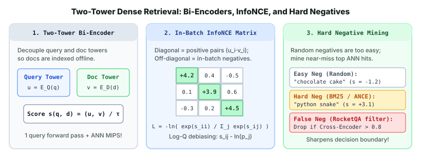

Search, Ranking & Retrieval · Dense Retrieval & ANN Indexing · Chapter 1
1. Two-Tower Bi-Encoders, InfoNCE Loss & Hard Negative Mining
Instead of matching discrete words, dense retrieval maps every query and document into a low-dimensional continuous vector space ($\mathbb{R}^d$, typically $d \in [128, 768]$) where semantic similarity corresponds to a high dot product or cosine similarity. This chapter covers the Two-Tower Bi-Encoder architecture, in-batch InfoNCE contrastive training with $\log Q$ popularity debiasing, and why hard negative mining (DPR, ANCE, RocketQA) is the single biggest driver of dense retrieval quality.

1. Why Two Towers? Bi-Encoders vs. Cross-Encoders
A Cross-Encoder concatenates the query and document into a single sequence [CLS] query [SEP] document [SEP] and runs full self-attention across every query-document token pair. While highly accurate, scoring $N = 10{,}000{,}000$ documents for a new query would require $10{,}000{,}000$ Transformer forward passes—taking hours per search.
A Two-Tower Bi-Encoder decouples the two encoders:
$$u = E_Q(q) \in \mathbb{R}^d, \qquad v = E_D(d) \in \mathbb{R}^d, \qquad s(q, d) = \langle u, v \rangle$$- Offline Indexing: Every document vector $v_j = E_D(d_j)$ is computed once offline and stored in an Approximate Nearest Neighbor (ANN) index.
- Online Serving: At query time, we run one forward pass through the query tower $u = E_Q(q)$ (~5 ms) and retrieve the top-$K$ documents with maximum inner product $\langle u, v_j \rangle$ in ~5 ms.
When vectors are $\ell_2$-normalized ($\|u\|_2 = \|v\|_2 = 1$), inner product $\langle u, v \rangle$, cosine similarity, and Euclidean distance order all documents identically because $\|u - v\|_2^2 = 2 - 2\langle u, v \rangle$.
2. In-Batch InfoNCE Contrastive Loss & Log-Q Correction
Suppose a training mini-batch contains $B$ positive query-document pairs $\{(q_1, d_1^+), \dots, (q_B, d_B^+)\}$. Encoding all $B$ queries and $B$ documents produces two matrices $U, V \in \mathbb{R}^{B \times d}$, and a single matrix multiplication $S = U V^\top / \tau$ gives all $B \times B$ temperature-scaled similarities:
$$\mathcal{L}_{\text{InfoNCE}} = -\frac{1}{B} \sum_{i=1}^{B} \ln \frac{\exp\!\big(\langle u_i, v_i^+ \rangle / \tau\big)}{\sum_{j=1}^{B} \exp\!\big(\langle u_i, v_j^+ \rangle / \tau\big)}$$Here the diagonal entry $j = i$ is the positive document for query $i$, and the remaining $B - 1$ documents in the batch serve as free in-batch negatives. The temperature $\tau$ (typically $\tau \in [0.02, 0.07]$ for unit-normalized vectors) controls gradient sharpness: a small $\tau$ magnifies differences between scores and focuses gradients on the hardest negatives in the denominator.
Sampling Bias (Log-Q Correction)
In production recommender systems (e.g., YouTube/Google Two-Tower models), in-batch negatives are drawn proportional to item popularity $p_j$—popular items appear in almost every batch and get unfairly pushed down. Yi et al. (2019) proved that subtracting $\ln p_j$ from each negative logit makes in-batch softmax an unbiased estimator of the full-corpus softmax:
$$s^{\text{corr}}_{ij} = \frac{\langle u_i, v_j \rangle}{\tau} - \ln(p_j) \qquad (j \neq i)$$3. Hard Negative Mining: DPR, ANCE, and RocketQA
In-batch negatives are randomly sampled from the corpus. A model can easily distinguish a query about "Python asyncio" from a random batch document about "chocolate cake recipes" without learning fine-grained semantics. To rank well among the top 100 candidates, we must append hard negatives $d_i^-$—documents that look superficially similar to $q_i$ but are non-relevant:
- Static BM25 Hard Negatives (DPR, Karpukhin et al., 2020): Retrieve the top BM25 hits for query $q_i$ that do not contain the ground-truth answer (e.g., a passage about
"Python snakes"or"Java futures"). - Dynamic Self-Mined Hard Negatives (ANCE, Xiong et al., 2021): As the dense bi-encoder improves, BM25 negatives stop challenging its dense decision boundary. ANCE asynchronously refreshes the ANN index with the latest model checkpoint and mines the top ANN false positives as the next round's hard negatives.
- Cross-Encoder Denoising (RocketQA, Qu et al., 2021): Up to $70\%$ of "top ANN hits not labeled positive" are actually unannotated false negatives (truly relevant documents that human labelers missed). Training against false negatives corrupts the encoder. RocketQA scores mined candidates with a strong Cross-Encoder teacher and discards any negative whose teacher probability exceeds a threshold (e.g., $P_{\text{teacher}}(q, d) > 0.8$).
4. Worked Numerical Example: Temperature & Hard Negatives
Consider a normalized query vector $u_1$ compared against its positive document $v_1^+$, two easy in-batch negatives ($v_2, v_3$), and one mined BM25 hard negative ($v_{\text{hard}}$). Let temperature $\tau = 0.1$:
| Candidate Document | Cosine Similarity $\langle u_1, v_j \rangle$ | Scaled Logit $\langle u_1, v_j \rangle / \tau$ | Unnormalized $\exp(\text{logit})$ | Softmax Prob (No Hard Neg) | Softmax Prob (With Hard Neg) |
|---|---|---|---|---|---|
Positive $v_1^+$ ("Python asyncio event loop") |
$+0.82$ | $+8.20$ | $3{,}640.95$ | $3640.95 / 3643.18 = \mathbf{99.94\%}$ | $3640.95 / 4737.81 = \mathbf{76.85\%}$ |
Easy Neg $v_2$ ("Chocolate cake recipe") |
$+0.05$ | $+0.50$ | $1.65$ | $0.045\%$ | $0.035\%$ |
Easy Neg $v_3$ ("NBA playoff standings") |
$-0.06$ | $-0.60$ | $0.58$ | $0.015\%$ | $0.012\%$ |
Hard Neg $v_{\text{hard}}$ ("Python threading GIL lock") |
$+0.70$ | $+7.00$ | $1{,}094.63$ | (Not included) | $1094.63 / 4737.81 = \mathbf{23.10\%}$ |
Look at the gradient signal:
- Without the hard negative: The positive probability is already $99.94\%$, so the loss is $-\ln(0.9994) = \mathbf{0.0006}$ and the gradient is nearly zero—training stalls!
- With the hard negative: The hard negative captures $23.10\%$ of the probability mass, raising the loss $430\times$ to $-\ln(0.7685) = \mathbf{0.2633}$ and forcing the bi-encoder to distinguish
"asyncio"from"threading".
5. Minimal PyTorch Implementation
import torch
import torch.nn as nn
import torch.nn.functional as F
class TwoTowerInfoNCE(nn.Module):
def __init__(self, temperature: float = 0.05):
super().__init__()
self.tau = temperature
def forward(
self,
q_emb: torch.Tensor, # [B, d]
pos_emb: torch.Tensor, # [B, d]
hard_neg_emb: torch.Tensor, # [B, d]
pos_log_prob: torch.Tensor | None = None, # [B] optional log(p_j) for log-Q correction
) -> torch.Tensor:
q = F.normalize(q_emb, dim=-1)
p = F.normalize(pos_emb, dim=-1)
n = F.normalize(hard_neg_emb, dim=-1)
# [B, B] in-batch similarity matrix (diagonal = positives, off-diagonal = in-batch negatives)
logits_inbatch = (q @ p.T) / self.tau
if pos_log_prob is not None:
# Subtract log(p_j) from off-diagonal in-batch negatives
mask = ~torch.eye(q.size(0), dtype=torch.bool, device=q.device)
logits_inbatch = logits_inbatch - mask * pos_log_prob.unsqueeze(0)
# [B, 1] similarity with each query's dedicated hard negative
logits_hard = (q * n).sum(dim=-1, keepdim=True) / self.tau
# Concatenate [B, B + 1] and compute cross-entropy where target is column i
logits = torch.cat([logits_inbatch, logits_hard], dim=1)
labels = torch.arange(q.size(0), device=q.device)
return F.cross_entropy(logits, labels)
# Quick verification
B, d = 8, 128
loss_fn = TwoTowerInfoNCE(temperature=0.05)
q, pos, hard_neg = torch.randn(B, d), torch.randn(B, d), torch.randn(B, d)
print("InfoNCE loss:", round(loss_fn(q, pos, hard_neg).item(), 4))